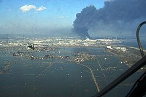

Los terremotos, también conocidos como temblores o seísmos, pueden ser tremendamente destructivos por lo que es difícil imaginar que ocurran todos los días, alrededor del mundo, en forma de pequeños temblores.
Casi el 80 por ciento de los seísmos del planeta ocurren en las costas del Pacífico, un área que también recibe el nombre de «Anillo de Fuego» por la gran actividad volcánica que presenta. La mayoría de los terremotos ocurren en zonas sísmicas o fallas geológicas, donde las placas tectónicas (gigantes placas rocosas que conforman la corteza superior del globo terráqueo) colisionan o se rozan entre sí. Estos impactos son, normalmente, graduales e imperceptibles en la superficie; sin embargo, una inmensa tensión se puede acumular entre las placas. Cuando esta tensión se libera rápidamente, se emiten vibraciones masivas, denominadas ondas sísmicas, a cientos de kilómetros a través de las rocas hasta llegar a la superficie terrestre. Otros temblores pueden ocurrir lejos de las zonas sísmicas cuando las placas se estiran o comprimen.
De media, los terremotos de 8 grados de magnitud ocurren en algún lugar del mundo cada año y casi 10.000 personas fallecen anualmente por dicha causa. Las edificaciones que se derrumban son las responsables, con diferencia, de la mayor parte de las víctimas, pero la destrucción se exacerba por los deslaves, deslizamientos, incendios, inundaciones o tsunamis que acompañan al seísmo. Réplicas más pequeñas ocurren en los días posteriores a un gran terremoto por lo que pueden complicar las operaciones de rescate y causar más muertes y destrucción.
